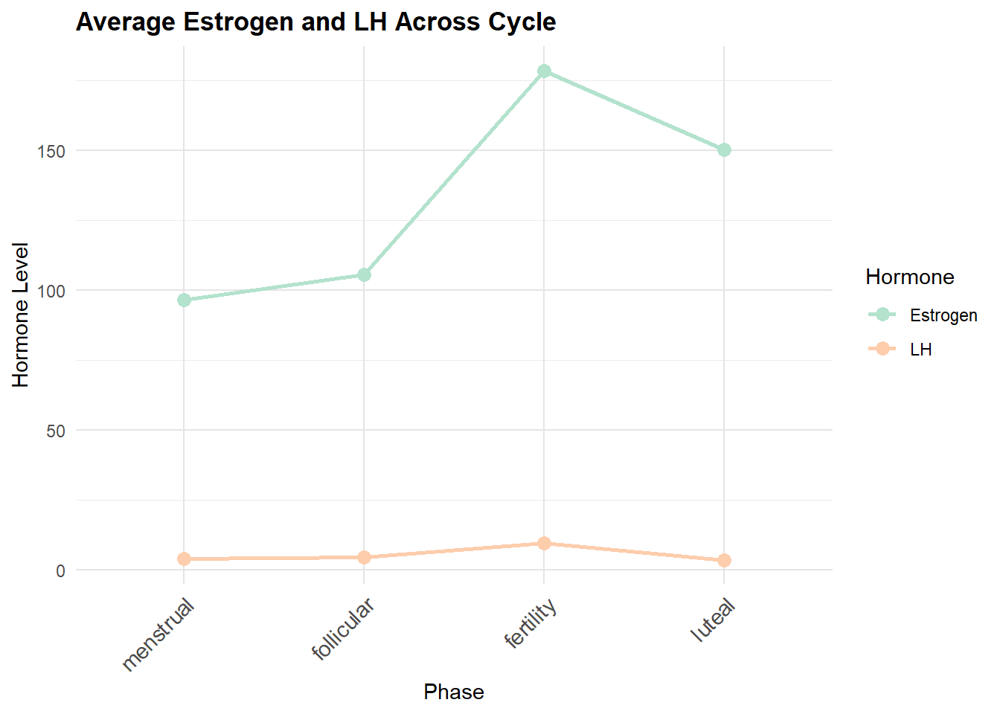
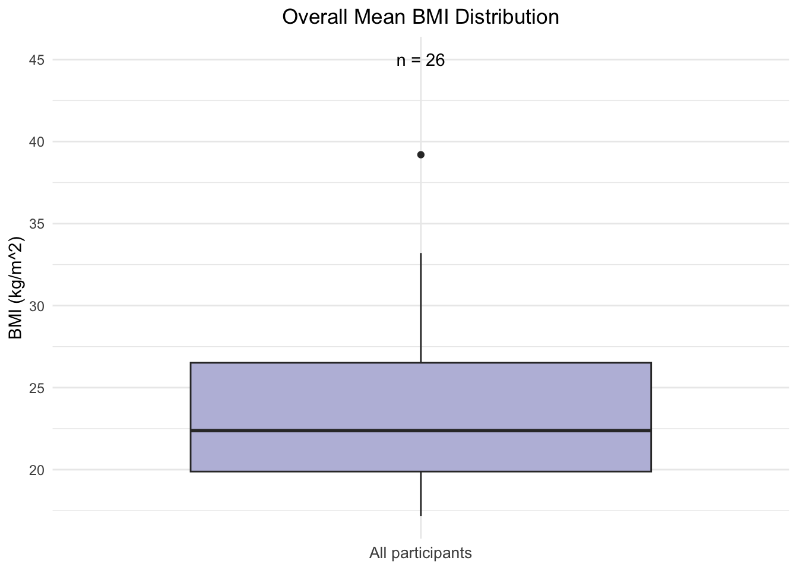
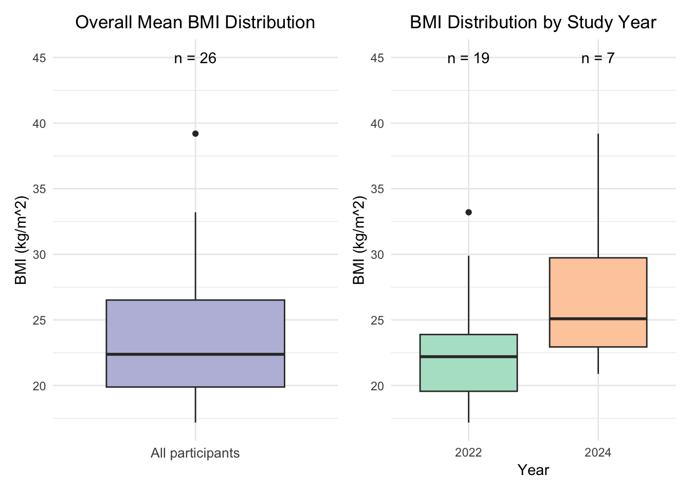
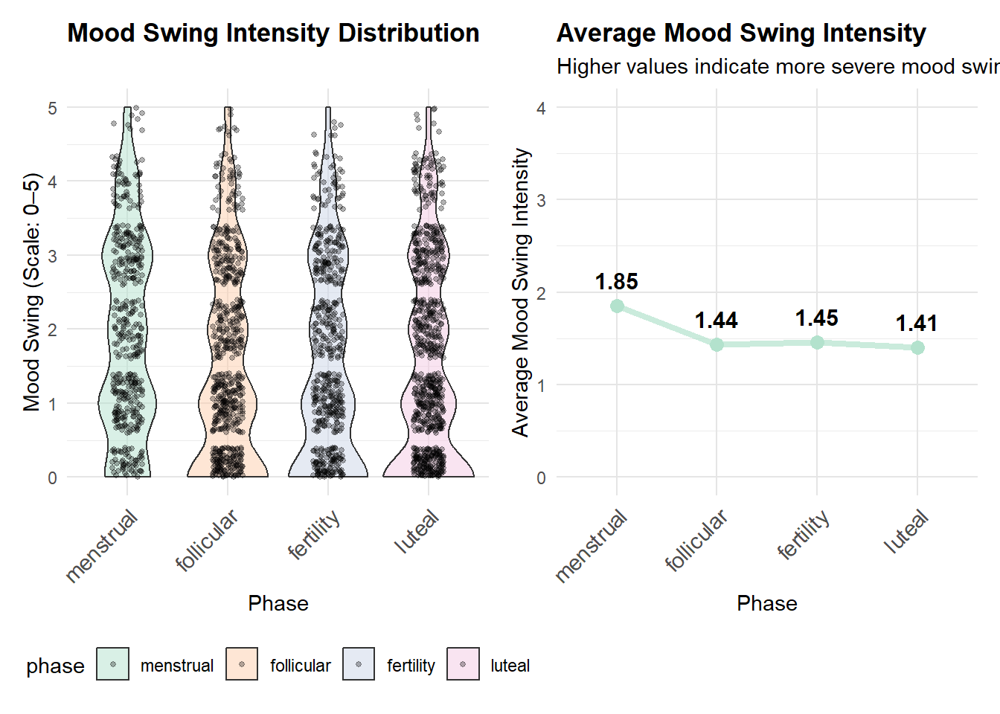
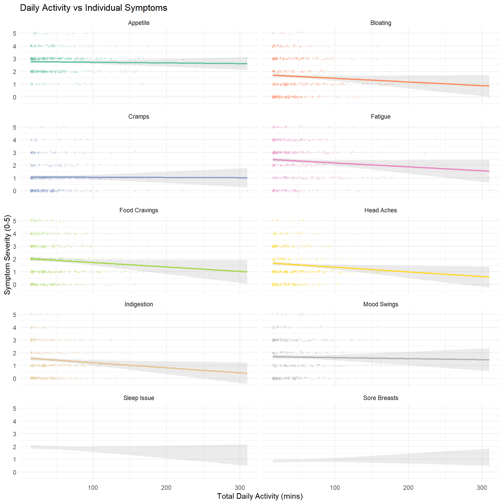
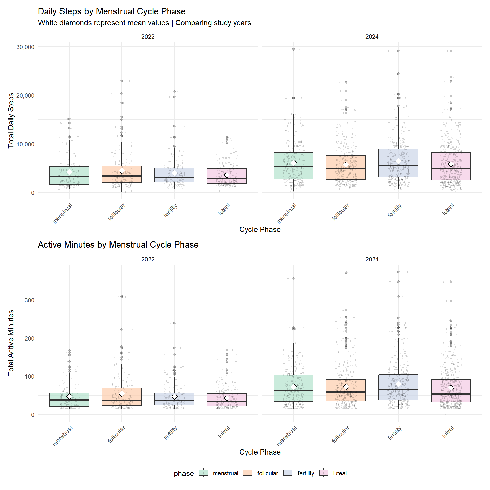
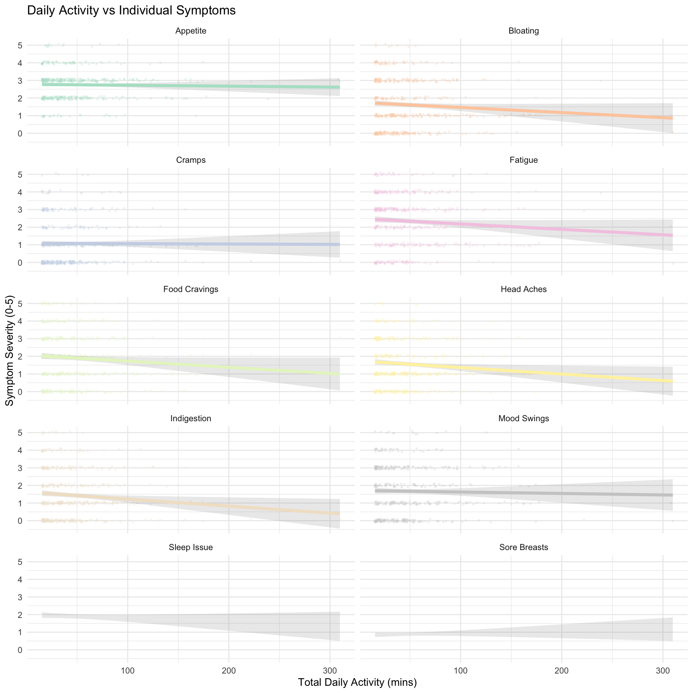

Report
# Load packages
library(tidyverse)
library(ggplot2)
library(modelr)
library(mgcv)
library(dplyr)
library(tidyr)
library(patchwork)
library(lme4)
library(lmerTest)
library(gt)
library(ggsci)
library(knitr)
library(broom.mixed) # for tidy
library(scales)
# Set plot theme
theme_set(theme_minimal() + theme(legend.position = "bottom"))
options(
ggplot2.discrete.colour = function(...) scale_colour_brewer(..., palette = "Pastel2"),
ggplot2.discrete.fill = function(...) scale_fill_brewer(..., palette = "Pastel2"),
ggplot2.continuous.colour = function(...) scale_colour_distiller(..., palette = "PuRd"),
ggplot2.continuous.fill = function(...) scale_fill_distiller(..., palette = "PuRd")
)Motivation
Half of the world’s population has experienced or will experience menstruation; for many, this physiologic function occurs monthly for several decades. For young adults who menstruate, symptoms and regular menstruation can be a vital health indicator. Abnormal symptoms can further suggest reproductive tract abnormalities, such as uterine fibroids or endometriosis. However, abnormal symptoms such as heavy bleeding or extreme pain can also be attributed to lifestyle characteristics. By leveraging a cohort of young adult menstruators, we hope to better understand the relationship between physiological menstrual characteristics and lifestyle factors such as stress, sleep, and exercise. Understanding how day-to-day factors influence menstrual health can help individuals who menstruate understand how to better manage concerning symptoms or identify when abnormal symptoms could be indicative of a more serious health concern.
Questions
- What are background characteristics of people who participated in this study?
- How does the menstrual cycle and hormones affect sleep and stress?
- How does exercise and caloric consumption affect menstrual symptoms and hormonal levels?
- How do hormonal levels affect menstrual symptoms?
- What is the significance of menstruation on self-reported symptoms of participants in this study?
Data
Data Sources
We utilized the inclusive, multimodal, longitudinal, and de-identified mcPHASES (menstrual cycle Physiological, Hormonal, and Self-Reported Events and Symptoms) dataset for menstrual health tracking with wearable devices.
Data was collected from 42 menstruating young adults in Canada over two 3-month intervals: Interval 1 (January–April 2022) and Interval 2 (July–October 2024). Participants wore Fitbit Sense smartwatches to measure physiological signals, and Mira Plus Starter Kits to track their hormone levels. Participants also self-reported daily symptom experiences like cramps, sleep quality, and stress levels via a smartphone diary app.
The original dataset contains 23 structured tables organized by signal category. For this project, we focused on the lifestyle factors such as exercise, sleep, and stress, and menstrual cycle symptoms. The datasets we used are the following:
- Demographics:
subject_info.csv: demographic data such as age, education, and age at menarche, and background survey responses collected at the start of the studyheight_and_weight.csv: participant’s baseline height and weight
- Hormone and Symptoms:
hormones_and_selfreport.csv：hormone data (LH, E3G, PdG) from the Mira fertility device and daily self-reported symptom survey responses (e.g., cramps, mood, menstrual flow) on a 6-level Likert-type scale from 0 (“Not at all”) to 5 (“Very high”)
- Lifestyle Factors:
stress_score.csv: daily Stress Management Score from those who have access to the Stress Management experiencesleep.csv: sleep session logs including timestamps, durations, and quality metrics collected by Fitbitsleep_score.csv: daily sleep score breakdowns provided by Fitbit, summarizing overall sleep quality based on multiple contributing factors
In total, we have 5 tidy dataframes:
subject_info- Contains demographics and background survey responses data where each row represents a participant
- A total of 62 observations of 18 variables
hormone_symptoms- Contains daily hormone and self-reported symptom-related data
- A total of 5659 observations of 36 variables
sleep_stress_daily- Contains daily sleep and stress related data
- A total of 5400 observations of 7 variables
exercise_daily- Contains daily exercise related data
- A total of 1744 observations of 12 variables
all_daily_data- The multimodal merged version of dataframes 2,3,4, where each row represents a daily data for a person in a specific study year, including hormone and self-reported symptoms, sleep score, stress score, daily exercise data.
- A total of 5659 observations of 50 variables
All dataframes can be linked by participant’s id.
Besides subejct_info, other dataframes can be further
linked by day_in_study and study_interval.
subject_info - Subject-Relevant Data
The subject_info dataframe contains participants
demographics data from subject_info.csv and
height_and_weight.csv, as well as participants study
enrollment year (this piece of information is from
hormones_and_selfreport.csv).
It contains a total of 62 observations of 18 variables. Some key variables are the following:
id: participant’s unique identifier- Age relevant variables:
birth_yearandage_of_first_menarche - Height and weight related variables:
avg_height,avg_weight,bmi - Study enrollment related information:
study(flag of which study the participant enrolled in,1=2022,2=2024,3=both),year(the year of study) - Categorical/Factor variables like
ethnicity,education,self_report_menstrual_health_literacy, etc.
ht_wt = read_csv("data/height_and_weight.csv")|>
janitor::clean_names() |>
# calculate mean height/weight
rowwise() |>
mutate(
avg_height = mean(c(height_2022, height_2024), na.rm = TRUE),
avg_weight = mean(c(weight_2022, weight_2024), na.rm = TRUE)
) |>
ungroup()
# import csv file
hormones_and_selfreport = read_csv("data/hormones_and_selfreport.csv") |>
janitor::clean_names()
# extract study_flag
study_flag <- hormones_and_selfreport |>
distinct(id, study_interval) |>
mutate(flag = 1,
study_interval = paste0("study_", study_interval)) |>
pivot_wider(
names_from = study_interval,
values_from = flag,
values_fill = 0
)
# read in subject-info.csv
subject_info_raw = read_csv("data/subject-info.csv") |>
janitor::clean_names()
subject_info <- subject_info_raw |>
# merging
left_join(ht_wt, by = "id") |>
left_join(study_flag, by = "id") |>
# add a study_flag
mutate(
study = case_when(
study_2022 == 1 & study_2024 == 1 ~ 3L, # both 2022 & 2024
study_2022 == 1 & study_2024 == 0 ~ 1L,
study_2024 == 1 & study_2022 == 0 ~ 2L,
TRUE ~ NA_integer_
)
) |>
# pivot_long for wt & ht
pivot_longer(
cols = c(weight_2022, weight_2024, height_2022, height_2024),
names_to = c(".value", "year"),
names_sep = "_"
) |>
rename(
weight_yr = weight,
height_yr = height
) |>
# keep only the relevant study year
filter(
(study == 1 & year == 2022) |
(study == 2 & year == 2024) |
(study == 3)
) |>
# calculate age
mutate(
year = as.numeric(year),
birth_year = as.numeric(birth_year),
age = year - birth_year
) |>
# get a mean age for each id
group_by(id) |>
mutate(
mean_age = mean(age, na.rm = TRUE)
) |>
ungroup() |>
# get BMI
mutate(
bmi = weight_yr / ( (height_yr / 100)^2 )
)|>
# convert NaN to NA
mutate(
across(c(avg_weight, avg_height),
~ if_else(is.nan(.), NA_real_, .))
) |>
#this factors variables and also creates "gender abrv", "education abrv", "race_category" which are simplified versions of these variables for use in tables, some figures, and regression models later on
mutate(
education = str_trim(education),
education_abrv = case_when(
education == "High school degree or equivalent (e.g. GED)" ~ "High School",
education == "Some university/ post-secondary, no degree" ~ "Some College",
education == "Bachelor's degree (e.g. BA, BS)" ~ "Bachelors",
education %in% c("Master's degree (e.g. MA, MS, MEd)", "Doctorate or professional degree") ~ "Graduate Degree",
TRUE ~ "Other"),
education_abrv = factor(
education_abrv,
levels = c("High School", "Some College", "Bachelors", "Graduate Degree or Higher", "Other"),
ordered = TRUE),
self_report_menstrual_health_literacy = factor(
self_report_menstrual_health_literacy,
levels = c("Non-existant", "Low", "Medium", "High"),
ordered = TRUE),
gender_abrv = case_when(
gender %in% c("Gender Fluid", "Non-binary") ~ "Gender Fluid or Non-binary",
gender %in% c("Prefer not to say", "Other") ~ "Prefer not to say or Other",
gender == "Woman" ~ "Woman"),
gender_abrv = factor(gender_abrv, levels = c("Woman", "Gender Fluid or Non-binary", "Prefer not to say or Other")),
sexually_active = factor(sexually_active, levels = c("Yes", "No", "Prefer not to say")),
race_category = case_when(
ethnicity %in% c("East Asian", "South Asian", "Southeast Asian") ~ "Asian",
ethnicity == "White" ~ "White",
TRUE ~ "Other"),
race_category = factor(
race_category, levels = c("Asian", "White", "Other"))) |>
# only need 1 study_interval flag to indicate the study year
mutate(study_interval = year) |>
select(-study_2022, -study_2024, -year, -study) |>
# rearrange the column order
select(
id,
study_interval,
everything()
)all_daily_data - Merged Multimodal Daily Data
The all_daily_data is a merged multimodal dataframe that
contains all daily-level data from
hormone_symptoms, exercise_daily, and
sleep_stress_daily dataframes, and used
hormone_symptoms as the anchor dataframe. Each row
represents a daily data for a person in a specific study year (including
sleep score, stress score, daily exercise data, hormone and
self-reported symptoms).
It contains a total of 5659 observations of 50 variables, with unique
combination of key identifiers (id,
study_interval, and day_in_study). Additional
flag variables that are not in 3 multimodal dataframes are
exercise_flag and sleep_stress_flag to
indicate if the observation day had at least one recorded exercise
session or if both stress and sleep scores are present.
all_daily_data <- hormone_symptoms |>
# MERGE exercise & hormone
left_join(exercise_daily, by = c("id", "study_interval", "day_in_study")) |>
# add flag exercised_flag for easy filtering in the future analyses
# only need to keep exercised_flag==1 to have all rows with exercise data
mutate(
exercised_flag = ifelse(!is.na(n_sessions) & n_sessions > 0, 1, 0),
menstruation = factor(if_else(phase == "menstrual", 1, 0),
levels = c(0, 1),
labels = c("No", "Yes"))
) |>
# MERGE sleep & stress score data
# noticed hormone_symptoms df has a stress_score column
# drop it
select(-stress_score) |>
left_join(sleep_stress_daily, by = c("id", "study_interval", "day_in_study")) |>
# add flag sleep_stress_flag for easy filtering in the future analyses
mutate(
sleep_stress_flag = ifelse(
!is.na(stress_score) & !is.na(sleep_score),1,0
)
)
# MERGE demographic data
# left_join(subject_info, by = c("id", "study_interval")) Exploratory Data Analysis
Participant Characteristics
summary_table_gt| Mean (Max-Min) or Count (%) | ||
|---|---|---|
| Age | 21.2 (18–29) | |
| BMI | 23.8 (17.2-39.2) | |
| Age at Menarche | 11.9 (10–15) | |
| Ethnicity | African | 1 (1.6%) |
| Caribbean | 1 (1.6%) | |
| East Asian | 20 (32.3%) | |
| Latina | 2 (3.2%) | |
| Middle Eastern | 7 (11.3%) | |
| South Asian | 1 (1.6%) | |
| Southeast Asian | 16 (25.8%) | |
| White | 14 (22.6%) | |
| Gender | Woman | 55 (88.7%) |
| Gender Fluid or Non-binary | 3 (4.8%) | |
| Prefer not to say or Other | 4 (6.5%) | |
| Education | High School | 7 (11.3%) |
| Some College | 34 (54.8%) | |
| Bachelors | 16 (25.8%) | |
| NA | 5 (8.1%) | |
| Sexually Active | Yes | 22 (35.5%) |
| No | 36 (58.1%) | |
| Prefer not to say | 4 (6.5%) |
The cohort includes 42 participants with a median age of ~21 years and a small number of older outliers (ages 27 and 29). This relatively narrow, young age range reduces age-related heterogeneity in reproductive hormones and symptomatic expression, helping to isolate phase-related effects.
The average age of menarche was 11.9, though some participants reported first menstruating as late as age 15. Our participants largely identified as women (88.7%) and as Asian (59.7%) or white (22.6%). More than 4 in 5 participants had completed at least some college, with 25.8% having a college degree and 8.1% having a graduate degree.
Age of first menarche
menarche_plot
Age of first menarche ranges roughly from 10 to 15 years with a median around 12 and a tight IQR (≈11–12.75). This homogeneous menarche distribution suggests a relatively standard reproductive development history across participants; because very early or very late menarche can influence cycle regularity and hormonal profiles, the lack of extreme variability here supports attributing observed hormone–symptom patterns primarily to current cycle phase rather than developmental differences.
BMI
overall_bmi_n <- subject_info |>
filter(!is.na(bmi)) |>
summarize(n = n())
bmi_all <- subject_info |>
filter(!is.na(bmi)) |>
ggplot(aes(x = "All participants", y = bmi)) +
geom_boxplot(fill = "#bcbddc") +
geom_text(
data = overall_bmi_n,
aes(
x = "All participants",
y = 45,
label = paste0("n = ", n)
)
) +
labs(
x = NULL,
y = "BMI (kg/m^2)",
title = "Overall Mean BMI Distribution"
) +
theme(
plot.title = element_text(hjust = 0.5),
axis.text.x = element_text(size = 10)
)
bmi_all
Among the 26 participants with BMI data, the median BMI ≈ 22.5 kg/m² (IQR ≈ 20–26) with one high outlier (~39). Overall, most participants fall in the normal-to-overweight range. Because adiposity influences sex steroid metabolism and inflammation, it is important to note that BMI variability could contribute to between-person differences in both hormone levels and symptom severity; including BMI as a covariate in later models may help separate phase effects from adiposity-driven variation.
Hormone and Symptoms
LH & Estrogen
We want to examine average estrogen and LH levels across menstrual cycle phases to see if hormonal patterns match biological expectations
## Warning: Using `size` aesthetic for lines was deprecated in ggplot2 3.4.0.
## ℹ Please use `linewidth` instead.
## This warning is displayed once every 8 hours.
## Call `lifecycle::last_lifecycle_warnings()` to see where this warning was
## generated.
Estrogen levels are highest in the Fertility (ovulatory) phase, second highest in Luteal, and relatively low in Menstrual, gradually rising from Follicular to Luteal. LH is much lower than estrogen overall, peaking sharply in Fertility and remaining low in the other phases.
Mood Swing
Moodswing Distribution Across Phases
Using violin plots to assess whether menstrual cycle hases influence mood swing intensity.
## Warning: Removed 2339 rows containing non-finite outside the scale range
## (`stat_ydensity()`).## Warning: Groups with fewer than two datapoints have been dropped.
## ℹ Set `drop = FALSE` to consider such groups for position adjustment purposes.## Warning: Removed 2865 rows containing missing values or values outside the scale range
## (`geom_point()`).
Violin plots show substantial inter-individual variability. Menstrual phase has the highest mood swing intensity (right-skewed distribution, peak around 1.85), while Luteal phase shows lower values with a wider base (more individuals with low mood swing).
Average Mood Swing Across Phases To visualize general trends, we should summarize the average mood swing intensity across phases.

Average mood swing is highest in Menstrual phase (1.85), lowest in Luteal phase (1.41), with intermediate levels in follicular and fertility phases.
Flow Volume
Flow Volume Distribution Across Phases
To assess flow volume distribution patterns, we visualize flow volume variation across phases with violin plots.
## Warning: Removed 2592 rows containing non-finite outside the scale range
## (`stat_ydensity()`).## Warning: Groups with fewer than two datapoints have been dropped.
## ℹ Set `drop = FALSE` to consider such groups for position adjustment purposes.## Warning: Removed 3826 rows containing missing values or values outside the scale range
## (`geom_point()`).
Luteal phase shows a right-skewed distribution, indicating most low-flow observations but a few high-flow days. Menstrual phase is narrow and tall, indicating consistently higher flow intensity.
Average Flow Volume Across Phases
Summarize average flow volume to observe general trends across the
menstrual cycle.

Menstrual phase has the highest average flow (2.38), luteal is lowest (0.03), fertility is 0.07, and follicular is 0.23.
Appetite
Average Appetite Across Phases
Summarize average appetite to observe general trends across the
menstrual cycle.

Appetite is highest in Fertility (2.96), lowest in Follicular (2.85), Luteal 2.95, Menstrual 2.90.
Sleep and stress
sleep_stress_df = all_daily_data|>
filter(!is.na(stress_score) & !is.na(sleep_score) & !is.na(timeinbed_mean)) |>
filter(stress_score != 0)|>
select(id, study_interval, day_in_study, phase, lh, estrogen, sleep_score, stress_score, timeinbed_mean, deep_sleep_in_minutes, total_active_min, moodswing_score) |>
mutate(
phase = fct_relevel(phase,"menstrual", "follicular", "fertility", "luteal")
)
sleep_stress_df = full_join(subject_info, sleep_stress_df, join_by(id))Menstruators spent more time in bed during menstrual time but their deep sleep hours were lowest. This showed that the physical exhaustion during menstrual days requiring them to rest but preventing them from having a restorative sleep quality. Follicular time is the when menstruators feel most energetic and spent less time in bed but having much better deep sleep. We explore the changes of the stress score with the menstrual cycle. The participants slept best during the menstrual time, probably a good sign to rest well during this time. The lowest sleep score were recorded during ovulation/ fertility time in which the increased estrogen and lh levels may contribute to this low sleep quality. The higher stress score the less stressful people experience. In this study, the participants showed the least stressful during folicular period , as the bodies are full of energy. The most stressful time is during luteal period.
# plot the sleep vs stress score by phases
plot_1 =
sleep_stress_df |>
group_by(phase) |>
summarize(
mean_sleep_score = mean(sleep_score, na.rm = TRUE),
mean_stress_score = mean(stress_score, na.rm = TRUE),
.groups = "drop"
) |>
pivot_longer(
cols = starts_with("mean_"),
names_to = "metric",
values_to = "value"
) |>
mutate(
metric = recode(metric,
mean_sleep_score = "Sleep Score",
mean_stress_score = "Stress Score")
) |>
ggplot(aes(x = phase, y = value, color = metric, group = metric)) +
geom_smooth(linewidth= 1) +
geom_point(size = 3) +
labs(color = "Metric", y = "Mean Score", x = "Phase") +
labs(
x = "Menstrual Cycle Phase",
y = "Score"
) +
theme_minimal() +
theme(legend.position = "bottom",
legend.title = element_blank(),
axis.text.x = element_text(angle = 45, hjust = 1))
# plot the hormone changes
coeff = 5.5
plot_2 =
sleep_stress_df |>
group_by(phase) |>
summarize(
mean_lh = mean(lh, na.rm = TRUE),
mean_estrogen = mean( estrogen, na.rm = TRUE),
.groups = "drop"
) |>
pivot_longer(
cols = starts_with("mean_"),
names_to = "metric",
values_to = "value"
) |>
mutate(
metric = recode(metric,
mean_lh = "LH",
mean_estrogen = "Estrogen")
) |>
ggplot(aes(x = phase, y = value, color = metric, group = metric)) +
geom_smooth(linewidth= 1) +
geom_point(size = 3) +
labs(color = "Metric", y = "level", x = "Phase") +
labs(
x = "Menstrual Cycle Phase",
y = "Level"
) +
theme_minimal() +
theme(legend.position = "bottom",
legend.title = element_blank(),
axis.text.x = element_text(angle = 45, hjust = 1))
# Plot the time in bed and deep sleep in minutes in phases
plot_3 =
sleep_stress_df |>
group_by(phase)|>
summarize(
mean_timeinbed = mean(timeinbed_mean/60, na.rm = TRUE),
mean_deep_sleep_in_minutes = mean((deep_sleep_in_minutes/60)*coeff, na.rm = TRUE)
)|>
pivot_longer(
cols = starts_with("mean_"),
names_to = "metric",
values_to = "value"
) |>
mutate(
metric = recode(metric,
mean_timeinbed = "Time in bed (hours)",
mean_deep_sleep_in_minutes = "Deep sleep (hours)")
) |>
ggplot(aes(x = phase, y = value, color = metric, group = metric)) +
geom_smooth(linewidth= 1) +
geom_point(size = 3) +
labs(color = "Metric", y = "level", x = "Phase") +
labs(
x = "Menstrual Cycle Phase",
y = "Level"
) +
scale_y_continuous(
# Features of the first axis
name = "Time in bed (hours)",
# Add a second axis and specify its features
sec.axis = sec_axis(~./coeff, name="Deep sleep (hours)")
) +
theme_minimal() +
theme(legend.position = "bottom",
legend.title = element_blank(),
axis.text.x = element_text(angle = 45, hjust = 1))
plot_1 + plot_2 + plot_3
# plot the variation of time in bed by menstrual phases
timeinbed_plot =
sleep_stress_df|>
#filter(!is.na(study_interval) & !is.na(phase)) |>
group_by(phase, id) |>
summarize(
timeinbed = mean(timeinbed_mean/60)
)|>
ggplot(aes(x = phase, y = timeinbed, fill = phase)) +
geom_violin(alpha = 0.5, width = 0.5)+
geom_boxplot(width = 0.2)+
labs(
x = " ",
y = "Time in bed (hrs)"
) +
theme(legend.position = "none")
# plot the variation of deep sleep score by menstrual phases
deep_sleep_plot =
sleep_stress_df|>
#filter(!is.na(study_interval) & !is.na(phase)) |>
group_by(phase, id) |>
summarize(
mean_deep_sleep = mean(deep_sleep_in_minutes/60)
)|>
ggplot(aes(x = phase, y = mean_deep_sleep, fill = phase)) +
geom_violin(alpha = 0.5, width = 0.5)+
geom_boxplot(width = 0.2)+
labs(
x = " ",
y = "Deep sleep (hrs)"
) +
theme(legend.position = "none")
# plot the variation of sleep score by menstrual phases
sleep_score_boxplot =
sleep_stress_df |>
#filter(!is.na(study_interval) & !is.na(phase)) |>
ggplot(aes(x = phase, y = sleep_score, fill = phase))+
geom_violin(alpha = 0.5, width = 0.5)+
geom_boxplot(width = 0.2)+
labs(
x = " ",
y = "Sleep score"
) +
theme(legend.position = "none")
# plot the variation of stress score by menstrual phases
stress_score_boxplot =
sleep_stress_df |>
#filter(!is.na(study_interval) & !is.na(phase)) |>
filter(stress_score != 0)|>
ggplot(aes(x = phase, y = stress_score, fill = phase))+
geom_violin(alpha = 0.5, width = 0.5)+
geom_boxplot(width = 0.2)+
labs(
x = " ",
y = "Stress score"
) +
theme(legend.position = "none")
(timeinbed_plot|deep_sleep_plot)/
(sleep_score_boxplot |stress_score_boxplot)
View the stress and sleep score across menstrual cycle phases for each ethnicity
sleep_stress_df |>
group_by(phase, ethnicity) |>
summarize(
mean_sleep_score = mean(sleep_score, na.rm = TRUE),
mean_stress_score = mean(stress_score, na.rm = TRUE),
.groups = "drop"
) |>
pivot_longer(
cols = starts_with("mean_"),
names_to = "metric",
values_to = "value"
) |>
drop_na()|>
mutate(
metric = recode(metric,
mean_sleep_score = "Sleep Score",
mean_stress_score = "Stress Score")
) |>
ggplot(aes(x = phase, y = value, color = ethnicity, group = ethnicity)) +
geom_line(size = 1) +
geom_point(size = 3) +
facet_grid(~ metric) +
labs(color = "Ethnicity", y = "Mean Score", x = "Phase") +
labs(
title = "stress and sleep score Across Menstrual Cycle Phases",
x = "Menstrual Cycle Phase",
y = "score"
) +
theme_minimal() +
theme(axis.text.x = element_text(angle = 45, hjust = 1))
Our dataset are from two studies in two different times, year 2022 and year 2024 in which the 2024 cohort is a subset from 2022 cohorts. Therefore the assumptions of independence is violated so we cannot use statistical tests that required independence assumptions. Instead, we used generalized linear mixed effects model to evaluate the significant different of stress score and sleep score between menstrual phases.
m1 <- lmer(stress_score ~ phase +(1 | id), data = sleep_stress_df)
tidy(m1, effects = "fixed")|>
select(term, estimate, std.error,p.value) |>
mutate(
significant = ifelse(p.value < 0.05, "Yes", "No")) |>
knitr::kable(digits = 3)| term | estimate | std.error | p.value | significant |
|---|---|---|---|---|
| (Intercept) | 76.762 | 0.614 | 0.000 | Yes |
| phasefollicular | 0.291 | 0.213 | 0.172 | No |
| phasefertility | -0.594 | 0.211 | 0.005 | Yes |
| phaseluteal | -0.525 | 0.198 | 0.008 | Yes |
m2 <- lmer(sleep_score ~ phase +(1 | id), data = sleep_stress_df)
tidy(m2, effects = "fixed")|>
select(term, estimate, std.error,p.value) |>
mutate(
significant = ifelse(p.value < 0.05, "Yes", "No")) |>
knitr::kable(digits = 3)| term | estimate | std.error | p.value | significant |
|---|---|---|---|---|
| (Intercept) | 77.436 | 0.709 | 0 | Yes |
| phasefollicular | -1.037 | 0.283 | 0 | Yes |
| phasefertility | -1.342 | 0.281 | 0 | Yes |
| phaseluteal | -1.126 | 0.263 | 0 | Yes |
ANU: STRESS
Distribution of Key Exercise Metrics
exercise_analysis = all_daily_data
# Distribution of daily step count
p1 = ggplot(exercise_analysis |> filter(total_steps > 0, total_steps < 50000),
aes(x = total_steps, fill = factor(study_interval))) +
geom_histogram(bins = 50, alpha = 0.7, position = "dodge") +
geom_vline(xintercept = median(exercise_analysis$total_steps[exercise_analysis$total_steps > 0], na.rm = TRUE),
linetype = "dashed", color = "black", linewidth = 1) +
labs(title = "Daily Step Count Distribution",
subtitle = paste("Median:",
scales::comma(round(median(exercise_analysis$total_steps[exercise_analysis$total_steps > 0], na.rm = TRUE))),
"steps"),
x = "Total Daily Steps",
y = "Count",
fill = "Study Year") +
scale_x_continuous(labels = scales::comma)
# Active minutes distribution
p2 = ggplot(exercise_analysis |> filter(total_active_min > 0),
aes(x = total_active_min, fill = factor(study_interval))) +
geom_histogram(bins = 50, alpha = 0.7, position = "dodge") +
geom_vline(xintercept = median(exercise_analysis$total_active_min[exercise_analysis$total_active_min > 0], na.rm = TRUE),
linetype = "dashed", color = "black", linewidth = 1) +
labs(title = "Active Minutes Distribution",
subtitle = paste("Median:",
round(median(exercise_analysis$total_active_min[exercise_analysis$total_active_min > 0], na.rm = TRUE), 1),
"minutes"),
x = "Total Active Minutes",
y = "Count",
fill = "Study Year")
# Calories Burned Distribution
p3 = ggplot(exercise_analysis |> filter(total_calories > 0),
aes(x = total_calories, fill = factor(study_interval))) +
geom_histogram(bins = 50, alpha = 0.7, position = "dodge") +
geom_vline(xintercept = median(exercise_analysis$total_calories[exercise_analysis$total_calories > 0], na.rm = TRUE),
linetype = "dashed", color = "black", linewidth = 1) +
labs(title = "Calories Burned Distribution",
subtitle = paste("Median:",
scales::comma(round(median(exercise_analysis$total_calories[exercise_analysis$total_calories > 0], na.rm = TRUE))),
"calories"),
x = "Total Calories Burned",
y = "Count",
fill = "Study Year") +
scale_x_continuous(labels = scales::comma)
# Exercise Sessions Per Day
p4 = ggplot(exercise_analysis |> filter(n_sessions > 0),
aes(x = n_sessions, fill = factor(study_interval))) +
geom_bar(alpha = 0.7, position = "dodge") +
labs(title = "Exercise Sessions Per Day",
x = "Number of Sessions",
y = "Count",
fill = "Study Year")
(p1 + p2) / (p3 + p4) +
plot_layout(guides = "collect") Step Count Distribution: Daily steps on active days showed pronounced right-skew with a median of 4,455 steps. The bulk of observations fell between 2,000-8,000 steps, with a long tail extending beyond 20,000 steps. The 2024 distribution (orange) shifted notably rightward compared to 2022 (teal), indicating higher step counts. Five extreme observations (≥50,000 steps) were excluded from this visualization only, as they distorted the scale and were obvious data errors.
Active Minutes Distribution: Exercise duration exhibited similar right-skew (52 minutes), with most sessions lasting 20-80 minutes. The 2024 cohort showed longer session durations, with the distribution peak occurring at higher values than 2022. This pattern suggests not only more frequent exercise in 2024, but also longer duration per session.
Calories Burned Distribution: Energy expenditure followed the expected pattern given step and duration data (Median = 153 calories). The heavy concentration near zero with gradual right tail indicates predominantly light-to-moderate intensity exercise, with occasional high-intensity sessions. The 2024-2022 difference parallels that observed in steps and active minutes duration.
Exercise Sessions: Most active days included 1-3 discrete exercise sessions, with a clear mode at 2 sessions. The 2024 cohort showed higher frequencies of 2+ sessions compared to 2022, suggesting either improved activity tracking or genuinely more structured exercise routines.
These distributions collectively demonstrate substantial right-skew, high between-person variability.
Exercise patterns across menstrual cycle phases
p1 = ggplot(exercise_analysis |> filter(!is.na(phase), total_steps > 0, total_steps < 50000),
aes(x = phase, y = total_steps, fill = phase)) +
geom_boxplot(alpha = 0.7, outlier.alpha = 0.3) +
geom_jitter(width = 0.2, alpha = 0.1, size = 0.5) +
stat_summary(fun = mean, geom = "point", shape = 23, size = 3, fill = "white") +
facet_wrap(~study_interval, ncol = 2) + # Side by side
labs(title = "Daily Steps by Menstrual Cycle Phase",
subtitle = "White diamonds represent mean values | Comparing study years",
x = "Cycle Phase",
y = "Total Daily Steps") +
scale_y_continuous(labels = comma) +
theme(legend.position = "bottom",
axis.text.x = element_text(angle = 45, hjust = 1))
p2 = ggplot(exercise_analysis |> filter(!is.na(phase), total_active_min > 0),
aes(x = phase, y = total_active_min, fill = phase)) +
geom_boxplot(alpha = 0.7, outlier.alpha = 0.3) +
geom_jitter(width = 0.2, alpha = 0.1, size = 0.5) +
stat_summary(fun = mean, geom = "point", shape = 23, size = 3, fill = "white") +
facet_wrap(~study_interval, ncol = 2) +
labs(title = "Active Minutes by Menstrual Cycle Phase",
x = "Cycle Phase",
y = "Total Active Minutes") +
theme(legend.position = "bottom",
axis.text.x = element_text(angle = 45, hjust = 1))
p1 / p2 + plot_layout(guides = "collect")
Physical activity varied across menstrual cycle phases, with patterns differing by year. In 2022, activity levels remained relatively stable across phases, with only slight differences between fertility, follicular, luteal, and menstrual phases. In contrast, 2024 showed more pronounced phase-related patterns, with the fertility phase demonstrating highest activity levels, followed by the follicular phase, and lower activity during luteal and menstrual phases. Both years exhibited substantial individual variability, as evident by the wide spread of data points and multiple outliers, suggesting that not all participants followed the same phase-related activity patterns. The 2024 cohort showed consistently higher activity across all phases compared to 2022, confirming the year differences observed in overall descriptive statistics.
Exercise vs. menstrual symptoms
symptoms_long = exercise_analysis |>
filter(total_active_min > 0) |>
select(id, total_active_min, appetite_score, headaches_score, sorebreasts_score, sleepissue_score, cramps_score, fatigue_score,
headaches_score, moodswing_score, foodcravings_score, indigestion_score, bloating_score) |>
pivot_longer(cols = ends_with("_score"),
names_to = "symptom",
values_to = "severity") |>
filter(!is.na(severity)) |>
mutate(symptom = case_when(
symptom == "appetite_score" ~ "Appetite",
symptom == "headaches_score" ~"Head Aches",
symptom == "sorebreasts_score" ~ "Sore Breasts",
symptom == "sleepissue_score" ~ "Sleep Issue",
symptom == "cramps_score" ~ "Cramps",
symptom == "fatigue_score" ~ "Fatigue",
symptom == "headaches_score" ~ "Headaches",
symptom == "moodswing_score" ~ "Mood Swings",
symptom == "foodcravings_score" ~ "Food Cravings",
symptom == "indigestion_score" ~ "Indigestion",
symptom == "bloating_score" ~ "Bloating"
))
p4 = ggplot(symptoms_long,
aes(x = total_active_min, y = severity, color = symptom)) +
geom_jitter(alpha = 0.2, size = 0.5, height = 0.1) +
geom_smooth(method = "lm", se = TRUE, linewidth = 1.5, alpha = 0.2) +
facet_wrap(~symptom, ncol = 2) +
labs(title = "Daily Activity vs Individual Symptoms",
x = "Total Daily Activity (mins)",
y = "Symptom Severity (0-5)") +
scale_x_continuous(labels = comma) +
scale_y_continuous(breaks = 0:5) +
theme(legend.position = "none")
p4 The scatterplots examine crude associations between daily activity (exercise) and each symptom:
Negative slopes (potential benefits): - Bloating: Modest downward trend suggests higher activity associates with reduced bloating - Food cravings: Slight negative association, though relationship appears weak - Indigestion: Minimal negative slope with high variability
Flat relationships (no clear association): - Cramps: Near-horizontal line despite being primary outcome - Appetite, headaches, sleep issues, sore breasts: Essentially flat with wide confidence bands - Mood swings: Slight positive but nearly flat, high uncertainty
Positive slope (likely reverse causation): - Fatigue: Higher fatigue appears to reduce exercise, not vice versa
Sleep issues and sore breasts exhibited insufficient data spread to estimate reliable trends
Across all panels, several key patterns emerge. First, the wide confidence bands indicate substantial uncertainty in all bivariate relationships. Second, the considerable scatter reveals that individual-level associations vary widely, i.e., some participants show strong exercise-symptom relationships while others show none. Third, many data points cluster at low activity levels (0-100 minutes), with sparser observations at higher activity, reflecting the right-skewed activity distribution. Fourth, symptoms generally concentrate at lower severity levels (0-2 on 0-5 scale), with relatively few observations at high severity, consistent with the descriptive statistics.
Modelling
Hormone and Symptoms
Mood Swing Linear Mixed Models
Test whether mood swing differ by menstrual phase, accounting for repeated measures.
## # A tibble: 4 × 8
## term estimate std.error conf.low conf.high p.value model significant
## <chr> <dbl> <dbl> <dbl> <dbl> <dbl> <chr> <chr>
## 1 (Intercept) 1.77 0.158 1.45 2.09 6.82e-15 Mood… Yes
## 2 phasefollicu… -0.369 0.0606 -0.488 -0.250 1.25e- 9 Mood… Yes
## 3 phasefertili… -0.345 0.0615 -0.465 -0.224 2.27e- 8 Mood… Yes
## 4 phaseluteal -0.240 0.0572 -0.352 -0.128 2.75e- 5 Mood… YesBased on the model results, the average mood swing score during the menstrual phase (the model intercept) is 1.77. Compared to this, symptoms are modestly lower in other phases, with the follicular phase showing the largest reduction of 0.37 points, followed by the fertility window at 0.34 points lower, and the luteal phase at 0.24 points lower. However, the analysis reveals that individual differences between participants are substantial; the random effects standard deviation of 0.98 for participant baselines is nearly identical to the residual standard deviation of 1.00, indicating that the unique baseline score of an individual accounts for as much variance in the data as all other unmeasured factors and the cycle phases combined. Therefore, while a statistically significant pattern links the menstrual phase to higher symptom reports, the predominant finding is the extensive variability from person to person, underscoring that the experience of cycle-related mood swings is highly individual.
Flow volume vs LH
Observing in exploratory scatter plots that self-reported flow volume scores appeared to follow an inverse pattern relative to luteinizing hormone (LH) levels, I conducted a linear mixed model analysis to formally test this visual hypothesis. The model was used to determine if this apparent inverse relationship was statistically significant when rigorously accounting for the repeated measures within each individual participant.
## # A tibble: 2 × 8
## term estimate std.error conf.low conf.high p.value model significant
## <chr> <dbl> <dbl> <dbl> <dbl> <dbl> <chr> <chr>
## 1 (Intercept) 0.641 0.0766 0.486 0.797 7.88e-10 Flow V… Yes
## 2 lh -0.0114 0.00353 -0.0183 -0.00445 1.29e- 3 Flow V… YesBased on the linear mixed model, a significant but modest relationship exists between luteinizing hormone (LH) levels and perceived menstrual flow volume. For every one-unit increase in LH, the flow volume score is estimated to decrease by -0.01138 points (p = 0.00129). While statistically significant, this effect is small in magnitude. The model indicates substantial individual differences, as the variation in scores within a single person over time (residual SD = 1.19) is much greater than the average differences between individuals’ baselines (intercept SD = 0.45). Therefore, while LH shows a significant inverse association with flow volume, within-person biological and measurement variability remains the dominant feature of the data.
Appetite vs Estrogen
After observing in a scatter plot that average moodswing scores appeared to follow estrogen patterns, I applied a linear mixed model to appetite to formally test whether estrogen levels directly predict its changes within individuals.
## # A tibble: 2 × 8
## term estimate std.error conf.low conf.high p.value model significant
## <chr> <dbl> <dbl> <dbl> <dbl> <dbl> <chr> <chr>
## 1 (Intercept) 2.89 0.0694 2.75 3.03 1.16e-39 Appet… Yes
## 2 estrogen 0.000129 0.000149 -0.000163 0.000421 3.85e- 1 Appet… NoBased on the linear mixed-effects model, the analysis finds no statistically significant relationship between measured estrogen levels and self-reported appetite scores in this dataset. The model estimates that for every one-unit increase in estrogen, the appetite score increases by a mere 0.0001137 points, an effect size so small as to be negligible. This relationship is not reliable, as indicated by a p-value of 0.402, which is far above the conventional threshold for significance. The model estimates the average appetite score when estrogen is zero to be 2.897 points. More notably, the random effects structure reveals that differences between individuals account for meaningful variation; the standard deviation of individual baseline scores is 0.415, while the standard deviation of the within-person residuals is 0.726. This indicates that while people have different typical appetite levels, the unexplained variation within a person’s own measurements over time is nearly twice as large as the differences between individuals, and estrogen, as modeled here, does not explain a significant portion of that within-person fluctuation.
Stress score model
# model
m4 <- lmer(stress_score ~ phase + deep_sleep_in_minutes +
timeinbed_mean + total_active_min + moodswing_score +(1 | id), data = sleep_stress_df)
tidy(m4, effects = "fixed", conf.int = TRUE)|>
select(term, estimate, std.error, conf.low, conf.high,p.value) |>
mutate(
significant = ifelse(p.value < 0.05, "Yes", "No")) |>
knitr::kable(digits = 3)| term | estimate | std.error | conf.low | conf.high | p.value | significant |
|---|---|---|---|---|---|---|
| (Intercept) | 73.254 | 1.848 | 69.591 | 76.917 | 0.000 | Yes |
| phasefollicular | -1.166 | 0.866 | -2.869 | 0.536 | 0.179 | No |
| phasefertility | -0.964 | 0.854 | -2.643 | 0.714 | 0.259 | No |
| phaseluteal | -0.840 | 0.753 | -2.321 | 0.641 | 0.265 | No |
| deep_sleep_in_minutes | 0.032 | 0.016 | 0.001 | 0.063 | 0.043 | Yes |
| timeinbed_mean | 0.009 | 0.004 | 0.002 | 0.016 | 0.013 | Yes |
| total_active_min | -0.009 | 0.008 | -0.024 | 0.006 | 0.232 | No |
| moodswing_score | -0.199 | 0.255 | -0.701 | 0.303 | 0.436 | No |
Multimodel Modeling
This section leverages the same cleaned data set used in other parts
of this analysis. For further simplification with regression, two new
variables were created - race_simplified, which collapses
specific ethnicity categories into broader racial groups (any with a
count < 3 was put into other if there was not an applicable category
already). Additionally, for simplicity of running the regression
focusing on solely menstrual symptoms, a binary variable reporting
menstruation as “no” (0) or “yes” (1) was created.
merged_df_model was created to easily run both demographic
and daily data through a regression model.
#Symptom Model Table
symptom_model_table| term | estimate | std.error | statistic | p.value |
|---|---|---|---|---|
| (Intercept) | -2.8740211 | 0.2617355 | -10.9806335 | 0.0000000 |
| fatigue_score | 0.0828352 | 0.0393638 | 2.1043502 | 0.0353479 |
| cramps_score | 0.6793600 | 0.0390456 | 17.3991598 | 0.0000000 |
| sleepissue_score | -0.0988157 | 0.0408318 | -2.4200679 | 0.0155176 |
| exerciselevel_score | -0.0361540 | 0.0448749 | -0.8056622 | 0.4204377 |
| appetite_score | 0.0213428 | 0.0543040 | 0.3930237 | 0.6943020 |
| bloating_score | 0.1999467 | 0.0455794 | 4.3867754 | 0.0000115 |
| moodswing_score | 0.0239386 | 0.0396494 | 0.6037568 | 0.5460054 |
| indigestion_score | 0.0004684 | 0.0460566 | 0.0101706 | 0.9918851 |
| sorebreasts_score | 0.1716188 | 0.0473759 | 3.6224898 | 0.0002918 |
| sd__(Intercept) | 0.7640288 | NA | NA | NA |
#Hormone Model Table
physiology_model_table| term | estimate | std.error | statistic | p.value |
|---|---|---|---|---|
| (Intercept) | -0.0847347 | 0.1118339 | -0.7576829 | 0.4486408 |
| estrogen | -0.0107894 | 0.0006200 | -17.4029663 | 0.0000000 |
| lh | -0.0399827 | 0.0076412 | -5.2325334 | 0.0000002 |
| sd__(Intercept) | 0.5473770 | NA | NA | NA |
We ran a binomial regression between menstruation and self-reported
symptoms. The results of our preliminary regression analysis show that
menstruation was positively associated with fatigue,
cramps, and bloating. There was a negative
association between menstruation and reported sleep issues
and sore breasts as well as measured estrogen
and luteinizing hormone (lh).
Demographic and Lifestyle Factors and Symptoms
Focusing on symptoms that were reported as statistically significant
#Fatigue Model Table
fatigue_model_table| term | estimate | std.error | statistic | df | p.value |
|---|---|---|---|---|---|
| (Intercept) | -1.4346051 | 2.2408483 | -0.6402062 | 189 | 0.5228139 |
| total_active_min | 0.0002023 | 0.0026844 | 0.0753474 | 189 | 0.9400180 |
| sleep_score | 0.0053336 | 0.0140101 | 0.3806943 | 189 | 0.7038576 |
| stress_score | -0.0375512 | 0.0183168 | -2.0500948 | 189 | 0.0417360 |
| education_abrv.L | -2.2241012 | 0.4229328 | -5.2587573 | 189 | 0.0000004 |
| education_abrv.Q | -0.9761060 | 0.2229059 | -4.3790038 | 189 | 0.0000197 |
| race_categoryWhite | 0.3656198 | 0.4647150 | 0.7867614 | 189 | 0.4324069 |
| race_categoryOther | -4.4100955 | 1.0598369 | -4.1611079 | 189 | 0.0000480 |
| bmi | 0.1534302 | 0.0631337 | 2.4302417 | 189 | 0.0160230 |
| age | 0.1646671 | 0.1115099 | 1.4767037 | 189 | 0.1414193 |
| lh | -0.0119495 | 0.0144548 | -0.8266844 | 189 | 0.4094584 |
| estrogen | 0.0003853 | 0.0009437 | 0.4083111 | 189 | 0.6835075 |
| sd__(Intercept) | 0.0000000 | NA | NA | NA | NA |
| sd__Observation | 1.1950942 | NA | NA | NA | NA |
#Bloating Model Table
bloating_model_table| term | estimate | std.error | statistic | df | p.value |
|---|---|---|---|---|---|
| (Intercept) | -2.4401831 | 1.7008021 | -1.4347249 | 185 | 0.1530538 |
| total_active_min | -0.0020409 | 0.0020051 | -1.0178424 | 185 | 0.3100821 |
| sleep_score | -0.0077098 | 0.0104901 | -0.7349610 | 185 | 0.4632939 |
| stress_score | 0.0195130 | 0.0143930 | 1.3557218 | 185 | 0.1768403 |
| education_abrv.L | -1.0180026 | 0.3144360 | -3.2375508 | 185 | 0.0014289 |
| education_abrv.Q | -0.6470382 | 0.1667751 | -3.8797044 | 185 | 0.0001453 |
| race_categoryWhite | -1.7936598 | 0.3571002 | -5.0228473 | 185 | 0.0000012 |
| race_categoryOther | -3.1112942 | 0.8248872 | -3.7717813 | 185 | 0.0002180 |
| bmi | 0.2388541 | 0.0488082 | 4.8937306 | 185 | 0.0000021 |
| age | -0.0930152 | 0.0835520 | -1.1132617 | 185 | 0.2670405 |
| lh | 0.0099888 | 0.0107001 | 0.9335203 | 185 | 0.3517682 |
| estrogen | -0.0014476 | 0.0007225 | -2.0036441 | 185 | 0.0465674 |
| sd__(Intercept) | 0.0000000 | NA | NA | NA | NA |
| sd__Observation | 0.8802719 | NA | NA | NA | NA |
#Sleep Issues Model Table
sleepissues_model_table| term | estimate | std.error | statistic | df | p.value |
|---|---|---|---|---|---|
| (Intercept) | -3.6990907 | 2.1783917 | -1.6980834 | 185 | 0.0911733 |
| total_active_min | 0.0031274 | 0.0025681 | 1.2177770 | 185 | 0.2248597 |
| sleep_score | 0.0005158 | 0.0134357 | 0.0383934 | 185 | 0.9694154 |
| stress_score | 0.0019146 | 0.0184347 | 0.1038615 | 185 | 0.9173918 |
| education_abrv.L | -1.5536426 | 0.4027305 | -3.8577729 | 185 | 0.0001579 |
| education_abrv.Q | -0.7917524 | 0.2136060 | -3.7066016 | 185 | 0.0002774 |
| race_categoryWhite | -0.2658462 | 0.4573748 | -0.5812436 | 185 | 0.5617837 |
| race_categoryOther | -5.5682087 | 1.0565177 | -5.2703412 | 185 | 0.0000004 |
| bmi | 0.2657641 | 0.0625136 | 4.2512983 | 185 | 0.0000337 |
| age | -0.0138125 | 0.1070136 | -0.1290722 | 185 | 0.8974408 |
| lh | -0.0240233 | 0.0137048 | -1.7529140 | 185 | 0.0812732 |
| estrogen | 0.0007335 | 0.0009254 | 0.7926353 | 185 | 0.4290056 |
| sd__(Intercept) | 0.0000000 | NA | NA | NA | NA |
| sd__Observation | 1.1274544 | NA | NA | NA | NA |
#Sore Breasts Model Table
sorebreasts_model_table| term | estimate | std.error | statistic | df | p.value |
|---|---|---|---|---|---|
| (Intercept) | -3.9263822 | 1.7162016 | -2.2878327 | 185 | 0.0232785 |
| total_active_min | -0.0007838 | 0.0020232 | -0.3874223 | 185 | 0.6988889 |
| sleep_score | -0.0031126 | 0.0105851 | -0.2940582 | 185 | 0.7690431 |
| stress_score | 0.0050235 | 0.0145234 | 0.3458886 | 185 | 0.7298194 |
| education_abrv.L | 0.0030779 | 0.3172830 | 0.0097007 | 185 | 0.9922705 |
| education_abrv.Q | 0.1668905 | 0.1682852 | 0.9917124 | 185 | 0.3226332 |
| race_categoryWhite | 0.0024793 | 0.3603335 | 0.0068805 | 185 | 0.9945176 |
| race_categoryOther | -1.0957357 | 0.8323560 | -1.3164268 | 185 | 0.1896594 |
| bmi | 0.0370000 | 0.0492501 | 0.7512671 | 185 | 0.4534465 |
| age | 0.1923219 | 0.0843085 | 2.2811687 | 185 | 0.0236779 |
| lh | -0.0159611 | 0.0107970 | -1.4782900 | 185 | 0.1410307 |
| estrogen | -0.0014135 | 0.0007290 | -1.9388633 | 185 | 0.0540395 |
| sd__(Intercept) | 0.0000000 | NA | NA | NA | NA |
| sd__Observation | 0.8882421 | NA | NA | NA | NA |
#Cramps Model Table
cramps_model_table| term | estimate | std.error | statistic | df | p.value |
|---|---|---|---|---|---|
| (Intercept) | -1.9179136 | 1.7515177 | -1.0950010 | 185 | 0.2749397 |
| total_active_min | 0.0032695 | 0.0020649 | 1.5834046 | 185 | 0.1150373 |
| sleep_score | 0.0015470 | 0.0108029 | 0.1432001 | 185 | 0.8862880 |
| stress_score | -0.0096558 | 0.0148222 | -0.6514380 | 185 | 0.5155722 |
| education_abrv.L | -0.6289376 | 0.3238121 | -1.9422919 | 185 | 0.0536201 |
| education_abrv.Q | 0.2234194 | 0.1717481 | 1.3008550 | 185 | 0.1949260 |
| race_categoryWhite | -0.4411321 | 0.3677484 | -1.1995486 | 185 | 0.2318487 |
| race_categoryOther | -1.4300749 | 0.8494843 | -1.6834625 | 185 | 0.0939723 |
| bmi | 0.0870362 | 0.0502636 | 1.7315966 | 185 | 0.0850124 |
| age | 0.0651615 | 0.0860434 | 0.7573094 | 185 | 0.4498280 |
| lh | -0.0035349 | 0.0110192 | -0.3207978 | 185 | 0.7487257 |
| estrogen | -0.0000529 | 0.0007440 | -0.0710404 | 185 | 0.9434423 |
| sd__(Intercept) | 0.0000000 | NA | NA | NA | NA |
| sd__Observation | 0.9065204 | NA | NA | NA | NA |
We found that self-reported fatigue was positively associated with having the educational attainment of High School (p < 0.001) or Some College (p < 0.001) compared to Bachelor’s degree or higher. We found fatigue was negatively associated with being in the “Other” racial category, which was a broad category comprising of hispanic, african, and middle eastern participants. (p < 0.001) There was also a correlation between higher BMI and fatigue (p < 0.05), as well as stress_score and fatigue (p < 0.05).
We found that bloating was negatively associated with Race being white (p < 0.001) or other (p < 0.001). We also found that bloating was positively associated with educational attainment of high school (p < 0.01) or college (p < 0.001). Furthermore, we found bloating was positively associated with BMI (p < 0.001) and negatively associated with estrogen (p < 0.05).
We found sleep issues to be positively associated with an educational attainment of high school (p < 0.001) or college (p < 0.001). Furthermore, we found that there was a positive association between higher BMI and reported sleep issues (p < 0.001). We found sleep issues to be negatively associated with being categorized in the “other” race category (p < 0.001).
We found sore breasts to be only positively associated with older age (p < 0.01). We did not find cramping symptoms to be associated with any biometric or demographic characteristic.
STRESS: ANU
We used linear mixed-effects models to test associations between daily physical activity and menstrual symptom severity. This modeling approach was necessary because our data violate the independence assumption of standard linear regression. Mixed-effects models explicitly account for this hierarchical data structure through random effects.
For each of 11 symptoms, we fit models with:
- Outcome: Symptom severity (0-5 scale)
- Predictor: Total active exercise minutes per day
- Covariate: Menstrual cycle phase (Menstrual, Follicular, Fertility, Luteal)
- Random effects: Random intercepts for participants (1|id)
The random intercept structure accounts for repeated measures within individuals, including the 20 participants (47.6%) who contributed data in both 2022 and 2024 study intervals. Each participant’s random intercept captures their baseline symptom tendency, allowing the model to distinguish between-person effects (do people who exercise more generally have fewer symptoms?) from within-person effects (on days when a person exercises more, do they experience fewer symptoms?).
Models were fit using the lme4 package in R with REML = FALSE. Statistical significance was assessed at α = 0.05.
# Model 1: Exercise → cramps
model_cramps = lmer(cramps_score ~ total_active_min + phase + (1|id),
data = exercise_analysis,
REML = FALSE)
summary(model_cramps)## Linear mixed model fit by maximum likelihood . t-tests use Satterthwaite's
## method [lmerModLmerTest]
## Formula: cramps_score ~ total_active_min + phase + (1 | id)
## Data: exercise_analysis
##
## AIC BIC logLik -2*log(L) df.resid
## 1265.8 1295.1 -625.9 1251.8 480
##
## Scaled residuals:
## Min 1Q Median 3Q Max
## -1.8748 -0.5374 -0.1912 0.2757 4.2158
##
## Random effects:
## Groups Name Variance Std.Dev.
## id (Intercept) 0.6555 0.8096
## Residual 0.6716 0.8195
## Number of obs: 487, groups: id, 23
##
## Fixed effects:
## Estimate Std. Error df t value Pr(>|t|)
## (Intercept) 1.779e+00 1.984e-01 3.557e+01 8.970 1.16e-10 ***
## total_active_min -4.666e-05 1.054e-03 4.686e+02 -0.044 0.965
## phasefollicular -1.028e+00 1.207e-01 4.711e+02 -8.516 2.24e-16 ***
## phasefertility -1.104e+00 1.219e-01 4.712e+02 -9.052 < 2e-16 ***
## phaseluteal -5.765e-01 1.115e-01 4.709e+02 -5.172 3.43e-07 ***
## ---
## Signif. codes: 0 '***' 0.001 '**' 0.01 '*' 0.05 '.' 0.1 ' ' 1
##
## Correlation of Fixed Effects:
## (Intr) ttl_c_ phsfll phsfrt
## totl_ctv_mn -0.222
## phasefllclr -0.314 -0.100
## phasefrtlty -0.337 0.010 0.585
## phaseluteal -0.352 0.020 0.608 0.591# Model 2: Exercise → fatigue
model_fatigue = lmer(fatigue_score ~ total_active_min + phase + (1|id),
data = exercise_analysis,
REML = FALSE)
summary(model_fatigue)## Linear mixed model fit by maximum likelihood . t-tests use Satterthwaite's
## method [lmerModLmerTest]
## Formula: fatigue_score ~ total_active_min + phase + (1 | id)
## Data: exercise_analysis
##
## AIC BIC logLik -2*log(L) df.resid
## 1545.3 1574.7 -765.7 1531.3 483
##
## Scaled residuals:
## Min 1Q Median 3Q Max
## -3.5272 -0.5929 -0.0512 0.6314 3.8870
##
## Random effects:
## Groups Name Variance Std.Dev.
## id (Intercept) 1.018 1.009
## Residual 1.176 1.084
## Number of obs: 490, groups: id, 23
##
## Fixed effects:
## Estimate Std. Error df t value Pr(>|t|)
## (Intercept) 2.761766 0.251087 37.814364 10.999 2.42e-13 ***
## total_active_min -0.002682 0.001361 473.226001 -1.971 0.0493 *
## phasefollicular -0.032942 0.159228 474.628046 -0.207 0.8362
## phasefertility -0.293860 0.160674 474.677079 -1.829 0.0680 .
## phaseluteal -0.191589 0.147090 474.355404 -1.303 0.1934
## ---
## Signif. codes: 0 '***' 0.001 '**' 0.01 '*' 0.05 '.' 0.1 ' ' 1
##
## Correlation of Fixed Effects:
## (Intr) ttl_c_ phsfll phsfrt
## totl_ctv_mn -0.227
## phasefllclr -0.325 -0.118
## phasefrtlty -0.351 -0.004 0.584
## phaseluteal -0.366 0.009 0.607 0.593# Model 3: Exercise → headaches
model_headaches = lmer(headaches_score ~ total_active_min + phase + (1|id),
data = exercise_analysis,
REML = FALSE)
summary(model_headaches)## Linear mixed model fit by maximum likelihood . t-tests use Satterthwaite's
## method [lmerModLmerTest]
## Formula: headaches_score ~ total_active_min + phase + (1 | id)
## Data: exercise_analysis
##
## AIC BIC logLik -2*log(L) df.resid
## 1423.2 1452.5 -704.6 1409.2 478
##
## Scaled residuals:
## Min 1Q Median 3Q Max
## -2.6236 -0.5364 -0.2010 0.4692 4.1854
##
## Random effects:
## Groups Name Variance Std.Dev.
## id (Intercept) 0.7962 0.8923
## Residual 0.9451 0.9721
## Number of obs: 485, groups: id, 23
##
## Fixed effects:
## Estimate Std. Error df t value Pr(>|t|)
## (Intercept) 2.054001 0.224101 38.079511 9.166 3.56e-11 ***
## total_active_min -0.002302 0.001252 467.878650 -1.839 0.06648 .
## phasefollicular -0.307807 0.143466 469.284423 -2.146 0.03242 *
## phasefertility -0.446385 0.144749 469.189552 -3.084 0.00216 **
## phaseluteal -0.255807 0.132367 468.740152 -1.933 0.05389 .
## ---
## Signif. codes: 0 '***' 0.001 '**' 0.01 '*' 0.05 '.' 0.1 ' ' 1
##
## Correlation of Fixed Effects:
## (Intr) ttl_c_ phsfll phsfrt
## totl_ctv_mn -0.238
## phasefllclr -0.335 -0.095
## phasefrtlty -0.358 0.013 0.586
## phaseluteal -0.374 0.024 0.610 0.593# Model 4: Exercise → mood swings
model_mood = lmer(moodswing_score ~ total_active_min + phase + (1|id),
data = exercise_analysis,
REML = FALSE)
summary(model_mood)## Linear mixed model fit by maximum likelihood . t-tests use Satterthwaite's
## method [lmerModLmerTest]
## Formula: moodswing_score ~ total_active_min + phase + (1 | id)
## Data: exercise_analysis
##
## AIC BIC logLik -2*log(L) df.resid
## 1404.6 1433.9 -695.3 1390.6 478
##
## Scaled residuals:
## Min 1Q Median 3Q Max
## -3.3104 -0.5034 -0.1327 0.4377 3.8246
##
## Random effects:
## Groups Name Variance Std.Dev.
## id (Intercept) 1.0026 1.0013
## Residual 0.8986 0.9479
## Number of obs: 485, groups: id, 23
##
## Fixed effects:
## Estimate Std. Error df t value Pr(>|t|)
## (Intercept) 2.171376 0.241831 35.385971 8.979 1.19e-10 ***
## total_active_min -0.001123 0.001221 467.100818 -0.919 0.3585
## phasefollicular -0.302978 0.140034 468.282025 -2.164 0.0310 *
## phasefertility -0.334806 0.141285 468.285367 -2.370 0.0182 *
## phaseluteal -0.147460 0.129191 467.921452 -1.141 0.2543
## ---
## Signif. codes: 0 '***' 0.001 '**' 0.01 '*' 0.05 '.' 0.1 ' ' 1
##
## Correlation of Fixed Effects:
## (Intr) ttl_c_ phsfll phsfrt
## totl_ctv_mn -0.215
## phasefllclr -0.302 -0.095
## phasefrtlty -0.324 0.013 0.586
## phaseluteal -0.338 0.023 0.610 0.593# Model 5: Exercise → sleep issues
model_sleep = lmer(sleepissue_score ~ total_active_min + phase + (1|id),
data = exercise_analysis,
REML = FALSE)
summary(model_sleep)## Linear mixed model fit by maximum likelihood . t-tests use Satterthwaite's
## method [lmerModLmerTest]
## Formula: sleepissue_score ~ total_active_min + phase + (1 | id)
## Data: exercise_analysis
##
## AIC BIC logLik -2*log(L) df.resid
## 1468.4 1497.8 -727.2 1454.4 481
##
## Scaled residuals:
## Min 1Q Median 3Q Max
## -3.0889 -0.4629 -0.2024 0.5656 3.2474
##
## Random effects:
## Groups Name Variance Std.Dev.
## id (Intercept) 0.9732 0.9865
## Residual 1.0127 1.0063
## Number of obs: 488, groups: id, 23
##
## Fixed effects:
## Estimate Std. Error df t value Pr(>|t|)
## (Intercept) 2.256e+00 2.419e-01 3.518e+01 9.326 4.85e-11 ***
## total_active_min -3.841e-04 1.266e-03 4.705e+02 -0.303 0.7618
## phasefollicular -2.968e-01 1.478e-01 4.715e+02 -2.008 0.0453 *
## phasefertility -1.314e-01 1.495e-01 4.716e+02 -0.879 0.3800
## phaseluteal -2.177e-01 1.367e-01 4.712e+02 -1.593 0.1118
## ---
## Signif. codes: 0 '***' 0.001 '**' 0.01 '*' 0.05 '.' 0.1 ' ' 1
##
## Correlation of Fixed Effects:
## (Intr) ttl_c_ phsfll phsfrt
## totl_ctv_mn -0.217
## phasefllclr -0.313 -0.117
## phasefrtlty -0.337 -0.001 0.583
## phaseluteal -0.352 0.009 0.607 0.590# Model 6: Exercise → bloating
model_bloating = lmer(bloating_score ~ total_active_min + phase + (1|id),
data = exercise_analysis,
REML = FALSE)
summary(model_bloating)## Linear mixed model fit by maximum likelihood . t-tests use Satterthwaite's
## method [lmerModLmerTest]
## Formula: bloating_score ~ total_active_min + phase + (1 | id)
## Data: exercise_analysis
##
## AIC BIC logLik -2*log(L) df.resid
## 1352.9 1382.3 -669.5 1338.9 481
##
## Scaled residuals:
## Min 1Q Median 3Q Max
## -3.2181 -0.4062 -0.1555 0.2982 3.2756
##
## Random effects:
## Groups Name Variance Std.Dev.
## id (Intercept) 1.1441 1.0696
## Residual 0.7848 0.8859
## Number of obs: 488, groups: id, 23
##
## Fixed effects:
## Estimate Std. Error df t value Pr(>|t|)
## (Intercept) 2.013e+00 2.497e-01 3.203e+01 8.063 3.29e-09 ***
## total_active_min -2.529e-04 1.116e-03 4.693e+02 -0.227 0.82086
## phasefollicular -4.045e-01 1.303e-01 4.701e+02 -3.104 0.00203 **
## phasefertility -4.009e-01 1.318e-01 4.702e+02 -3.042 0.00248 **
## phaseluteal -1.687e-02 1.205e-01 4.699e+02 -0.140 0.88866
## ---
## Signif. codes: 0 '***' 0.001 '**' 0.01 '*' 0.05 '.' 0.1 ' ' 1
##
## Correlation of Fixed Effects:
## (Intr) ttl_c_ phsfll phsfrt
## totl_ctv_mn -0.185
## phasefllclr -0.267 -0.117
## phasefrtlty -0.288 -0.001 0.584
## phaseluteal -0.300 0.008 0.607 0.590# Model 7: Exercise → appetite
model_appetite = lmer(appetite_score ~ total_active_min + phase + (1|id),
data = exercise_analysis,
REML = FALSE)
summary(model_appetite)## Linear mixed model fit by maximum likelihood . t-tests use Satterthwaite's
## method [lmerModLmerTest]
## Formula: appetite_score ~ total_active_min + phase + (1 | id)
## Data: exercise_analysis
##
## AIC BIC logLik -2*log(L) df.resid
## 1112.0 1141.4 -549.0 1098.0 483
##
## Scaled residuals:
## Min 1Q Median 3Q Max
## -3.5900 -0.7095 -0.0207 0.5041 2.7077
##
## Random effects:
## Groups Name Variance Std.Dev.
## id (Intercept) 0.2401 0.4900
## Residual 0.4974 0.7053
## Number of obs: 490, groups: id, 23
##
## Fixed effects:
## Estimate Std. Error df t value Pr(>|t|)
## (Intercept) 2.821e+00 1.353e-01 4.822e+01 20.853 <2e-16 ***
## total_active_min 3.267e-04 8.830e-04 4.767e+02 0.370 0.712
## phasefollicular -1.079e-01 1.033e-01 4.784e+02 -1.045 0.297
## phasefertility 5.397e-02 1.042e-01 4.782e+02 0.518 0.605
## phaseluteal 4.432e-02 9.541e-02 4.778e+02 0.465 0.642
## ---
## Signif. codes: 0 '***' 0.001 '**' 0.01 '*' 0.05 '.' 0.1 ' ' 1
##
## Correlation of Fixed Effects:
## (Intr) ttl_c_ phsfll phsfrt
## totl_ctv_mn -0.275
## phasefllclr -0.392 -0.117
## phasefrtlty -0.423 -0.003 0.582
## phaseluteal -0.442 0.010 0.607 0.593# Model 8: Exercise → sore breasts
model_sorebreasts = lmer(sorebreasts_score ~ total_active_min + phase + (1|id),
data = exercise_analysis,
REML = FALSE)
summary(model_sorebreasts)## Linear mixed model fit by maximum likelihood . t-tests use Satterthwaite's
## method [lmerModLmerTest]
## Formula: sorebreasts_score ~ total_active_min + phase + (1 | id)
## Data: exercise_analysis
##
## AIC BIC logLik -2*log(L) df.resid
## 1095.2 1124.5 -540.6 1081.2 480
##
## Scaled residuals:
## Min 1Q Median 3Q Max
## -2.5866 -0.4788 -0.0787 0.1664 4.8257
##
## Random effects:
## Groups Name Variance Std.Dev.
## id (Intercept) 0.5941 0.7708
## Residual 0.4677 0.6839
## Number of obs: 487, groups: id, 23
##
## Fixed effects:
## Estimate Std. Error df t value Pr(>|t|)
## (Intercept) 1.091e+00 1.828e-01 3.362e+01 5.968 9.88e-07 ***
## total_active_min 4.040e-04 8.798e-04 4.682e+02 0.459 0.6463
## phasefollicular -4.467e-01 1.008e-01 4.702e+02 -4.430 1.17e-05 ***
## phasefertility -4.254e-01 1.018e-01 4.703e+02 -4.177 3.52e-05 ***
## phaseluteal -1.883e-01 9.311e-02 4.701e+02 -2.022 0.0437 *
## ---
## Signif. codes: 0 '***' 0.001 '**' 0.01 '*' 0.05 '.' 0.1 ' ' 1
##
## Correlation of Fixed Effects:
## (Intr) ttl_c_ phsfll phsfrt
## totl_ctv_mn -0.201
## phasefllclr -0.284 -0.100
## phasefrtlty -0.306 0.010 0.585
## phaseluteal -0.319 0.020 0.609 0.591# Model 9: Exercise → food cravings
model_foodcravings = lmer(foodcravings_score ~ total_active_min + phase + (1|id),
data = exercise_analysis,
REML = FALSE)
summary(model_foodcravings)## Linear mixed model fit by maximum likelihood . t-tests use Satterthwaite's
## method [lmerModLmerTest]
## Formula: foodcravings_score ~ total_active_min + phase + (1 | id)
## Data: exercise_analysis
##
## AIC BIC logLik -2*log(L) df.resid
## 1532.1 1561.5 -759.1 1518.1 480
##
## Scaled residuals:
## Min 1Q Median 3Q Max
## -2.8215 -0.4849 -0.0844 0.4775 2.9251
##
## Random effects:
## Groups Name Variance Std.Dev.
## id (Intercept) 1.149 1.072
## Residual 1.160 1.077
## Number of obs: 487, groups: id, 23
##
## Fixed effects:
## Estimate Std. Error df t value Pr(>|t|)
## (Intercept) 2.097176 0.262072 35.617779 8.002 1.8e-09 ***
## total_active_min -0.001306 0.001385 468.676043 -0.943 0.346
## phasefollicular -0.224711 0.158630 471.169091 -1.417 0.157
## phasefertility -0.071820 0.160225 471.231603 -0.448 0.654
## phaseluteal 0.206519 0.146492 470.916645 1.410 0.159
## ---
## Signif. codes: 0 '***' 0.001 '**' 0.01 '*' 0.05 '.' 0.1 ' ' 1
##
## Correlation of Fixed Effects:
## (Intr) ttl_c_ phsfll phsfrt
## totl_ctv_mn -0.221
## phasefllclr -0.312 -0.100
## phasefrtlty -0.336 0.010 0.585
## phaseluteal -0.350 0.020 0.608 0.591# Model 10: Exercise → indigestion
model_indigestion = lmer(indigestion_score ~ total_active_min + phase + (1|id),
data = exercise_analysis,
REML = FALSE)
summary(model_indigestion)## Linear mixed model fit by maximum likelihood . t-tests use Satterthwaite's
## method [lmerModLmerTest]
## Formula: indigestion_score ~ total_active_min + phase + (1 | id)
## Data: exercise_analysis
##
## AIC BIC logLik -2*log(L) df.resid
## 1382.3 1411.7 -684.2 1368.3 480
##
## Scaled residuals:
## Min 1Q Median 3Q Max
## -2.4525 -0.3690 -0.1614 0.1884 3.5885
##
## Random effects:
## Groups Name Variance Std.Dev.
## id (Intercept) 1.0583 1.0288
## Residual 0.8439 0.9187
## Number of obs: 487, groups: id, 23
##
## Fixed effects:
## Estimate Std. Error df t value Pr(>|t|)
## (Intercept) 1.769395 0.244309 32.741431 7.242 2.75e-08 ***
## total_active_min -0.001599 0.001182 467.608774 -1.353 0.1766
## phasefollicular -0.186153 0.135431 469.771507 -1.375 0.1699
## phasefertility -0.312394 0.136794 469.868346 -2.284 0.0228 *
## phaseluteal 0.043008 0.125065 469.591348 0.344 0.7311
## ---
## Signif. codes: 0 '***' 0.001 '**' 0.01 '*' 0.05 '.' 0.1 ' ' 1
##
## Correlation of Fixed Effects:
## (Intr) ttl_c_ phsfll phsfrt
## totl_ctv_mn -0.202
## phasefllclr -0.286 -0.100
## phasefrtlty -0.307 0.010 0.585
## phaseluteal -0.320 0.020 0.609 0.591# Cleaning results:
# Extracting coefficients for exercise effect
results_summary = bind_rows(
tidy(model_cramps, effects = "fixed") %>% mutate(outcome = "Cramps"),
tidy(model_fatigue, effects = "fixed") %>% mutate(outcome = "Fatigue"),
tidy(model_headaches, effects = "fixed") %>% mutate(outcome = "Head Aches"),
tidy(model_mood, effects = "fixed") %>% mutate(outcome = "Mood Swings"),
tidy(model_sleep, effects = "fixed") %>% mutate(outcome = "Sleep Issues"),
tidy(model_bloating, effects = "fixed") %>% mutate(outcome = "Bloating"),
tidy(model_appetite, effects = "fixed") %>% mutate(outcome = "Appetite"),
tidy(model_indigestion, effects = "fixed") %>% mutate(outcome = "Indigestion"),
tidy(model_sorebreasts, effects = "fixed") %>% mutate(outcome = "Sore breasts"),
tidy(model_foodcravings, effects = "fixed") %>% mutate(outcome = "Food cravings")
) %>%
filter(term == "total_active_min") %>%
select(outcome, estimate, std.error, statistic, p.value) %>%
mutate(
significant = ifelse(p.value < 0.05, "Yes", "No"),
p.value = format.pval(p.value, digits = 3, eps = 0.001)
)
knitr::kable(results_summary)| outcome | estimate | std.error | statistic | p.value | significant |
|---|---|---|---|---|---|
| Cramps | -0.0000467 | 0.0010536 | -0.0442889 | 0.9647 | No |
| Fatigue | -0.0026819 | 0.0013608 | -1.9708807 | 0.0493 | Yes |
| Head Aches | -0.0023021 | 0.0012515 | -1.8394980 | 0.0665 | No |
| Mood Swings | -0.0011226 | 0.0012213 | -0.9191398 | 0.3585 | No |
| Sleep Issues | -0.0003841 | 0.0012664 | -0.3033156 | 0.7618 | No |
| Bloating | -0.0002529 | 0.0011161 | -0.2265707 | 0.8209 | No |
| Appetite | 0.0003267 | 0.0008830 | 0.3699452 | 0.7116 | No |
| Indigestion | -0.0015992 | 0.0011818 | -1.3532633 | 0.1766 | No |
| Sore breasts | 0.0004040 | 0.0008798 | 0.4592262 | 0.6463 | No |
| Food cravings | -0.0013056 | 0.0013846 | -0.9429113 | 0.3462 | No |
Linear mixed-effects models showed limited evidence for associations between daily physical activity and menstrual symptom severity after controlling for cycle phase and individual differences. Of the 11 symptoms examined, only fatigue showed statistically significant relationships with exercise at α = 0.05: fatigue (β = -0.0026819 , SE = 0.0013608, p = 0.0493).
For fatigue, the negative coefficient indicates that each additional minute of daily active exercise was associated with a 0.0027 point decrease in fatigue severity on the 0-5 scale.
The remaining 9 symptoms showed no significant associations with exercise. Effect estimates for these symptoms were near-zero with confidence intervals spanning positive and negative values, indicating no detectable relationship between daily exercise and symptom severity after controlling for menstrual cycle phase.
Interestingly, cramps, the primary outcome of interest given its prominence in menstrual symptom research, showed essentially no association with exercise (β = -0.00005, p = 0.9647). The point estimate had wide confidence intervals indicating no evidence of either beneficial or harmful effects.
Discussion
Data Handling
- data quality issues - take hormones & self-reported as an example
regardless the most common missing data (due to self-report), 1) integer values in categorical variables; 2) inconsistent likert scale (‘very low/little’ vs. ‘very low’) >> give us the tip when we run a study to collect different likert scale data, collect them at the same scale for easy and consistent future data analyses.
- data entry issues - take sleep.csv as an example ### Hormone and symptoms discussion Yue This analysis explored the relationships between menstrual cycle phases, key hormones, and self-reported symptoms. The hormone profiles followed expected physiological patterns, with estrogen peaking during the fertility phase and luteinizing hormone (LH) spiking sharply at ovulation. Symptom patterns also aligned with common clinical observations: mood swing intensity and flow volume were highest during the menstrual phase, while appetite showed minimal fluctuation.
The linear mixed model for mood swings confirmed a statistically significant association with cycle phase but revealed that the individual differences between participants (random intercept SD = 0.98) accounted for variation comparable to the model’s residual error. This underscores that baseline predisposition is a critical factor in symptom experience, often outweighing the phase effect itself. Similarly, the model testing the observed inverse relationship between LH and flow volume found a statistically significant result (β = -0.011, p = 0.001), but the effect size was very small. The substantial residual variation (SD = 1.19) indicates that LH levels alone explain only a minor portion of the daily variation in perceived flow. Contrary to the initial visual hypothesis, the model found no significant relationship between estrogen levels and appetite scores (p = 0.402), suggesting other factors drive appetite changes across the cycle.
Multimodal discussion
Emily We found several associations between menstrual symptoms and lifestyle factors, biometric measurements, and demographic characteristics. Interestingly, lifestyle characteristics were consistently among the most significant results in our models, particularly race, education, and BMI.
Interestingly, some self-reported that might be expected to be linked with related quantitative variables were not positively associated. For example, self-reported fatigue and self-reported sleep issues were not significantly associated with the quantitative variable sleep score that aggregated bio metric data on sleep quality. This could suggest that menstruation creates feelings of fatigue that do not reflect true sleep quality. Similarly, minutes of activity was not positively associated with the reduction of any symptoms in our mixed-modal results.
Exercise discussion
Anu:
Limitation
Yue(Several limitations should be considered when interpreting these findings. First, the dataset relies on self-reported symptom scores, which may be subject to recall bias or subjective interpretation. Second, while repeated measures are accounted for using linear mixed models, the sample size for some phases may be limited, reducing statistical power to detect subtle effects. Finally, other biological and lifestyle factors—such as stress, sleep, diet, and physical activity—were not controlled for, which could influence mood, appetite, and fatigue. Therefore, the results should be interpreted as suggestive of phase-related trends rather than definitive causal effects.)
Emily(Limitations to this data set as a whole also apply to the significance and generalization of this regression analysis. Namely, the small sample size is a limitation and could be exaggerating the influence of some demographic factors on symptoms. Furthermore, with the population being largely comprised of young, white or Asian participants, these results may not be generalizable to a more diverse population.)
Anu: